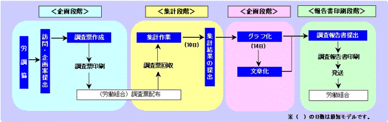

意識調査、家計調査、生活実態調査などの標準的企画による調査票を用意しています。
標準調査のメリットは、第1に他組合との比較が可能であること。第2に共同で企画するために調査費用が安くてすむことなどです。
調査に関しては長年の蓄積と最新の技術をもつ労調協が責任をもって調査を実施しますので、正確な調査結果を手に入れることができます。
労調協がお引き受けする調査は労働問題に関するものであれば、とくに限定はありません。最近の実績を紹介すると、以下のような調査領域をあげることができます。国内のみでなく海外労働組合等との比較調査も実施しています。
賃金に関する調査、各種労働条件に関する調査
家計調査、生活実態調査、生活時間調査、中高年・定年退職者調査、住宅事情調査など
総合調査、ＵＩ（ユニオンアイデンティティー）に関する調査、政治意識調査、女性意識調査、青年意識調査など
組合組織機能調査、教宣活動実態調査など
経営動向に関する調査、海外進出企業実態調査など
地域福祉実態調査、地方分権に関する調査、環境に関する調査など
調査は、一般的には下図のように企画一集計一分析段階で構成されています。
労調協では、労働組合の要望に応じ、調査の設計、集計、分析という調査全般を受託します。また、調査票の設計、集計、分析といった各段階における部分的な受託も行なっています。
よりよい調査活動を行なうため、労調協をご利用下さい。
調査の性格によっては、アンケート方式よりも組合や職場を訪問して行うインタビュー方式がより適切なケースがあります。労調協では、訓練を積んだ調査研究員が、直接インタビューに当たりますので、より有益な結果を得ることができます。
さらに、アンケート調査の実施にあたっても、企画や分析段階でインタビュー調査を併用することによって、より的確な情報を得ることができます。
調査は、企画段階で、その成否の大半が左右されるといわれています。
労調協は、組合の意向を適切に調査票に盛り込みながら、正確な結果が得られるよう調査票を設計します。労働問題の調査研究と調査技法の研究のいずれもについて永年の実績を持っている専門機関だからこそ完成度の高い調査票をつくることができます。
調査の集計は労調協が独自に構築した集計処理システムにより、正確・迅速かつ的確な結果を見やすい出力帳票でお届けします。
集計結果の図表化も独自のシステムによって、汎用のグラフソフトでは得られない美しい出力を提供します。また、エクセルなどのファイル形式にも対応可能です。
各種の多変量解析など高度なデータ処理も提供します。
＜サンプル＞
調査からの有用な情報を得るためには、的確な分析視点を持って、適切な集計や分析図表を作成しなければなりません。労調協は、永年の実績と最新の調査研究にもとづいた最適な分析を行います。
集計された結果をもとに、労調協のベテラン研究員が簡潔で、わかりやすい分析報告書を作成します。さらに調査結果をもとに今後の組合活動に役立つ「提言」を行います。
この他調査についてのいろいろなご相談もお受けしています。お気軽にご相談ください。
{kind=link}
{kind=link}
{kind=link}
{kind=link}